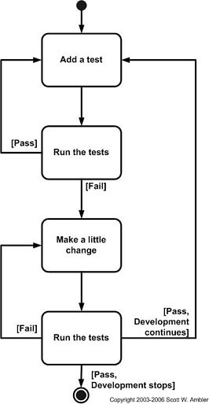

Test Driven Development
Here you write a test before you write just enough production code to fulfill that test and then go on to refactor the code.
- Mocha
- Jasmine
- Tape
- Jest
TDD is one way to think through your requirements or design before your write your functional code
